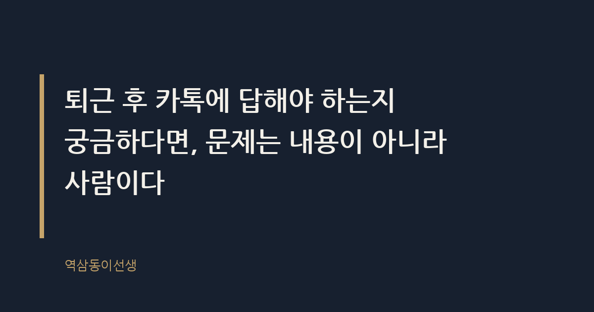
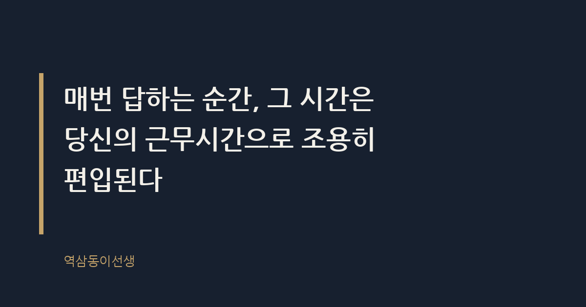

주제 퇴근 후 업무 카톡, 답해야 할까 (evergreen / office)
제목 후보
메타 설명 퇴근 후 업무 카톡, 답해야 할지 기준이 헷갈린다면. 25년 직장생활 끝에 정리한 판단법과 상황별 답장 예시를 담았다.
라벨 퇴근후카톡, 업무카톡답장, 직장생활팁, 연결되지않을권리, 워라밸, 회사생활, 직장인에세이, 상사와의소통, 카톡답장예시, 근로시간외업무
실용 자산 예시 문장 모음 — 퇴근 후 카톡 답장 여부는 상황별 화법이 필요한 결정형 검색 의도라 바로 쓸 수 있는 예시 문장이 도움이 된다
발행 전 팩트체크
이미지 (Blogger 편집기에 드래그해 넣으세요)
도입부 사진 · ⓒ tranmautritam / Pexels


금요일 저녁 7시, 써니와 동네 파스타집에 마주 앉아 메뉴판을 보고 있었다. 그때 휴대폰이 울렸다. 팀 막내였다. "팀장님, 내일 오전 보고자료 3페이지 그래프, 지난달 기준으로 다시 돌린 거 맞을까요?" 포크를 든 채로 1초쯤 멈췄다. 답을 할까, 월요일에 보라고 할까. 별것 아닌 그 1초가 직장인이라면 다 안다. 퇴근 후 업무 카톡 앞에서 매번 겪는 그 망설임이다.
결론부터 말하면, 퇴근 후 업무 카톡에 답해야 하는지는 내용으로 정하는 게 아니다. 누가 보냈고, 왜 지금 보냈는지를 먼저 봐야 한다. 25년을 다녀보니 "급한가 안 급한가"보다 "이 사람이 평소에 시간 개념이 있는 사람인가"가 훨씬 정확한 기준이었다.
신입 때는 카톡이 오면 내용부터 읽었다. 급한 일이면 답하고, 안 급해 보이면 넘겼다. 그런데 몇 년 지나니 패턴이 보였다. 똑같이 "급한 것처럼 보이는" 카톡인데, 어떤 상사는 정말 다음 날 처리하면 되는 일이었고, 어떤 상사는 진짜 그날 밤 안에 처리해야 사고가 안 나는 일이었다.
차이는 보낸 사람의 평소 업무 스타일에 있었다. 낮에 일을 몰아서 안 하고 저녁에 생각나는 대로 던지는 사람의 카톡은 급해 보여도 안 급하다. 반대로 낮에 할 일 다 해놓고 정말 막판에 변수가 터진 사람의 카톡은, 짧아도 진짜 급하다. 그러니 카톡이 오면 "이 사람이 평소 몇 시에 연락하는 사람인가"부터 떠올려야 한다. 이게 25년 치 데이터로 뽑은 가장 정확한 1차 필터다.
예전 팀에 저녁 9시만 되면 아이디어가 솟는 상무님이 한 분 있었다. "이거 한번 검토해봐"로 시작하는 카톡이 하루 걸러 하루 왔는데, 신입들은 그걸 다음 날 1순위 업무로 올려놓고 밤새 자료를 만들었다. 몇 달 지나 알고 보니 본인도 그 아이디어의 7할은 다음 날 아침이면 까맣게 잊었다. 반면 같은 시간에 카톡을 보내던 다른 팀장은, 보내는 메시지 수가 적은 대신 보내면 반드시 다음 날 오전 회의에서 그 얘기를 다시 꺼냈다. 똑같은 밤 9시 카톡인데 무게가 전혀 달랐던 거다.
퇴근 후 업무 지시란 근로계약상 정해진 근로시간 외에 사용자가 업무 관련 연락을 하는 행위를 말한다. 한국에는 이를 금지하는 명시적 조항이 근로기준법에 아직 없는 것으로 알려졌다. '퇴근 후 카톡 금지법'이라 불리는 법안이 국회에 여러 차례 발의됐지만 본회의를 통과하지 못한 채 폐기와 재발의를 반복해 온 것으로 알려졌다.
다만 판례 쪽은 조금 다르다. 사용자의 지시로 업무 대기 상태에 있었고 그 구속력이 인정되면, 그 시간이 근로시간으로 인정된 사례가 있는 것으로 알려졌다. 즉 "카톡 좀 보낸 거 가지고 뭘"이라는 회사 쪽 논리가 법적으로 항상 안전한 건 아니라는 뜻이다. 다만 실제로 이걸 입증해서 수당을 받아내는 건 또 다른 차원의 싸움이다. 법은 방패는 되지만, 매일 쓰는 칼은 아니다.
같은 "퇴근 후 업무 카톡"이라도 업종에 따라 체감 온도가 완전히 다르다. 광고·마케팅 쪽은 캠페인 론칭이나 긴급 대응 때문에 저녁 연락이 잦은 편으로 알려졌다. 반면 제조업 생산관리 부서는 교대 근무 특성상 밤 연락이 오히려 드물고, 오면 진짜 설비 사고 같은 중대 사안인 경우가 많다고 한다. 유통·이커머스는 주말과 공휴일에 트래픽이 몰리는 구조라, 평일 저녁보다 주말 연락이 더 흔하다는 얘기도 여러 번 들었다.
이 차이를 모르고 업계를 옮기면 적응에 시간이 걸린다. 광고 대행사에서 제조업 대기업으로 이직한 후배가 한 명 있었는데, 처음 몇 주는 저녁마다 휴대폰을 쥐고 불안해했다. 몇 달 지나 "여기는 저녁에 카톡이 거의 안 와서 오히려 어색하다"고 웃으며 말했다. 업종이 바뀌면 퇴근 후 카톡에 대한 감각도 새로 맞춰야 한다는 걸 보여주는 장면이다.
팀장을 달고 나서야 알게 된 게 있다. 상사가 밤 11시에 카톡을 보내는 건 대부분 "지금 당장 답하라"는 뜻이 아니라 "지금 생각났으니 잊기 전에 적어놓는다"는 뜻이다. 보내는 사람 입장에서는 자기 머릿속 할 일 목록을 비우는 행위다. 받는 사람 입장에서는 그게 즉시 처리해야 할 지시로 해석된다. 이 간극에서 거의 모든 갈등이 시작된다.
문제는 상사가 이 간극을 설명해 준 적이 없다는 거다. "지금 안 봐도 돼, 내일 아침에 봐"라는 말을 붙이는 상사는 드물다. 레오나르도 다빈치가 메모를 수백 장 남긴 건 당장 쓰려던 게 아니라 생각이 날아갈까 봐 붙잡아 둔 거였다. 밤 11시 카톡도 비슷하다. 다만 받는 사람은 그걸 모른 채 밤잠을 설친다.
이 간극을 직접 겪어본 뒤로, 나는 밤에 떠오른 생각은 메모 앱에 먼저 적어두는 습관을 들였다. 그리고 다음 날 오전 출근길에 한 번 더 읽어보고, 그래도 필요한 얘기면 그때 카톡을 보낸다. 밤 사이 묵혀두면 절반 가까이는 "굳이 지금 아니어도 됐네" 싶은 것들이었다. 나머지 절반만 진짜였다.
예약 전송 기능을 쓰기 시작한 것도 그 무렵이다. 밤에 떠오른 피드백을 바로 보내는 대신 다음 날 오전 9시로 예약해둔다. 후배 입장에서는 아침에 카톡이 와도 "밤새 참았구나"가 아니라 "오늘 할 일이구나"로 자연스럽게 받아들인다. 똑같은 내용인데 보내는 시점 하나로 상대가 느끼는 압박감이 완전히 달라진다. 이걸 깨닫고 나서는 팀원들에게 퇴근 후 카톡을 거의 보내지 않는 팀장이 됐다.
매번 답하는 순간, 그 시간은 당신의 근무시간으로 조용히 편입된다. 처음 한두 번은 "성실하다"는 평가로 돌아오지만, 그게 석 달 쌓이면 상사의 뇌 속에서 "이 친구는 밤에도 연락되는 사람"으로 분류된다. 분류가 끝나면 그 다음부터는 성실함이 아니라 기본값이 된다. 안 하면 오히려 이상한 사람이 되는 거다.
내가 옆에서 지켜본 후배 중에, 입사 2년 차까지 모든 퇴근 후 카톡에 즉답하던 친구가 있었다. 3년 차에 번아웃이 왔고, 퇴사 면담에서 그 친구가 한 말이 아직도 기억난다. "저는 그냥 잘 보이고 싶었는데, 그게 제 일상이 될 줄은 몰랐어요." 선의로 시작한 습관이 본인도 모르게 계약이 되어버린 경우다.
| 상황 | 이렇게 말한다 | 이건 피한다 |
|---|---|---|
| 단순 확인 질문, 급하지 않음 | "확인했습니다, 내일 오전에 바로 답드릴게요" | 그 자리에서 바로 자료를 찾아 보내는 것 |
| 진짜 급한 업무, 다음날 사고 우려 | "지금 확인하고 10분 내로 연락드리겠습니다" | 읽씹 후 다음 날 "못 봤습니다" |
| 습관적으로 매일 밤 연락하는 상사 | "내일 오전 업무 시작하면서 바로 처리하겠습니다"를 반복해서 패턴을 만든다 | 한 번은 즉답, 한 번은 무응답으로 기준 없이 대응하는 것 |
| 단순 잡담성 카톡 | 다음 출근일 오전에 읽고 답한다 | 업무처럼 성실하게 밤에 답해주는 것 |
모든 퇴근 후 카톡을 무시하라는 얘기가 아니다. 금액 오류, 거래처 클레임, 법적 분쟁 소지가 있는 건 등은 다음 날 아침까지 기다리면 사고가 커지는 유형이다. 이런 카톡은 보낸 사람이 평소 과장하지 않는 사람이라면 대체로 진짜다. 이때는 바로 답하는 게 맞다. 다만 답한 뒤에는 "오늘 처리했다"는 걸 기록으로 남겨둔다. 문자든 메일이든 흔적이 있어야, 나중에 "그때 왜 안 챙겼냐"는 말이 안 나온다.
반대로 보낸 사람이 평소 밤낮 없이 카톡을 보내는 스타일이라면, 그 사람의 긴급도는 할인해서 들어야 한다. 늑대가 나타났다고 외친 양치기 소년의 비유가 딱 맞다. 매일 긴급을 외치는 사람의 긴급은, 어느 순간부터 긴급이 아니게 된다.
거래처 클레인으로 밤 10시에 카톡이 온 적이 실제로 있었다. 그날 바로 답하고 담당자에게도 공유해뒀더니, 다음 날 아침 상황이 더 커지기 전에 정리가 끝났다. 그 뒤로 그 상사는 내게 밤에 연락하는 횟수가 오히려 줄었다. 진짜 급할 때 제대로 대응하는 모습을 한 번 보여주면, 상사도 아무 때나 찔러보지 않게 된다는 걸 그때 배웠다.
씁쓸하지만 사실이다. 매번 즉답하는 사람보다, 필요할 때만 정확히 답하는 사람이 오래 보면 더 신뢰받는다. 전자는 '손이 많이 가는 사람', 후자는 '알아서 하는 사람'으로 기억에 남는다. 퇴근 후 업무 카톡은 결국 신뢰의 문제다. 매번 답한다고 신뢰가 쌓이는 게 아니라, 꼭 필요할 때 제대로 답하는 사람이 신뢰를 얻는다.
써니와의 저녁 식사로 돌아가서, 나는 결국 "월요일 오전에 확인해서 공유할게"라고 답했다. 그래프는 실제로 지난달 기준이 맞았고, 월요일 아침에 1분 만에 끝난 일이었다. 금요일 저녁의 1초짜리 망설임이 아깝지 않았다.
Q. 퇴근 후 카톡, 일단 읽고 고민하는 편인가요, 아니면 보자마자 바로 답하는 편인가요?